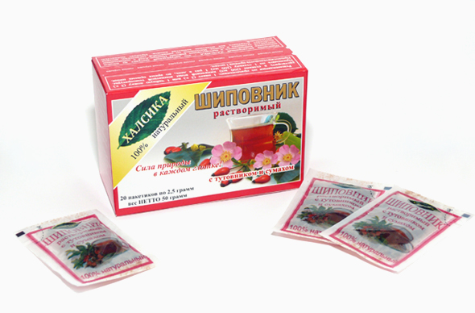
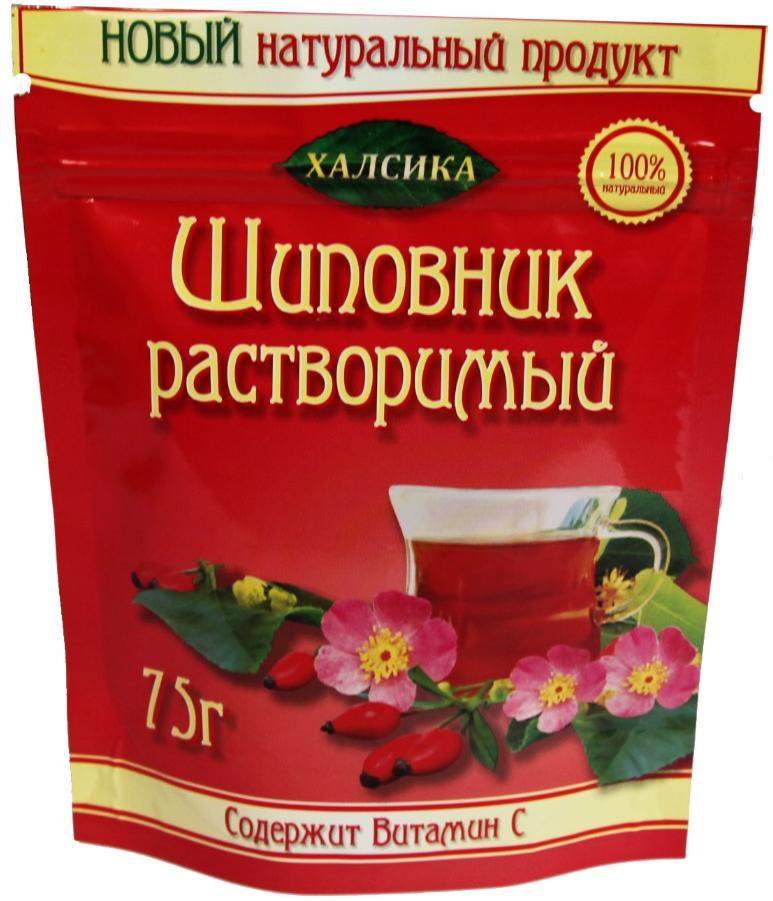
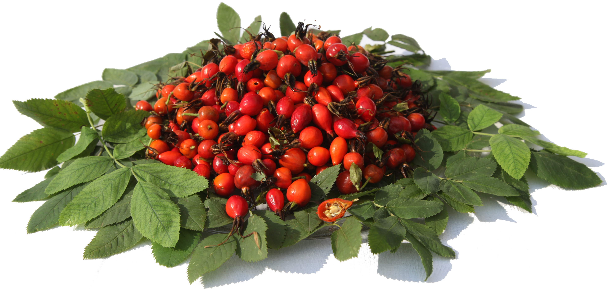

В нашей продукции вы не найдете искусственных красителей, усилителей вкуса и прочей химии, ничего этого там просто нет!
Шиповник растворимый “ХАЛСИКА” - это максимальная вытяжка витаминов и биологически-активных веществ из плодов и ягод (экстракт), не требует времени на приготовление напитка, достаточно просто развести в воде и вы наполните свой организм натуральными, природными витаминами.
Шиповник растворимый “ХАЛСИКА” - это сбалансированные натуральные витамины! Уже давно наукой доказано, что биологически активные вещества в растениях находятся в сбалансированном виде. Это значит, что в растениях, кроме витаминов, находятся специальные вещества, которые помогают этим витаминам усваиваться. Ведь эффективность витаминов зависит не от их количества, а на сколько их усвоил организм.
Сбалансированный природой состав дает лучший эффект, чем применение синтетических витаминов. Воспроизвести искусственно такой сложный комплекс в правильных соотношениях достаточно трудно, поэтому ничего не может быть лучше, чем натуральные витамины, созданные самой природой!
Шиповник растворимый “ХАЛСИКА”- это натуральные витамины в большой концентрации, поэтому он очень экономичен и используется в небольших количествах.
Для производства 1 кг. сухого экстракта используется 8 - 10 кг. плодов шиповника!



Шиповник растворимый “ХАЛСИКА”
Быстро! - в условиях напряженного ритма жизни экономит ваше время. Не надо заниматься измельчением плодов, настаиванием, процеживанием все сделано за вас.
Удобно! - в любое время вы можете пополнить свой организм натуральными витаминами, приготовив напиток дома, в офисе, в дороге.
Полезно! - современные технологии вакуумной экстракции при низких температурах сохраняют все витамины и биологически-активные вещества, свойственные натуральным плодам.
Применение:
1 чайную ложку экстракта или 1 пакетик растворите в 150-200 мл. умеренно горячей воде и вы получите согревающий витаминный напиток (что актуально зимой).
Можно развести экстракт в воде комнатной температуры (что актуально летом).
Мед или сахар добавляйте по вкусу.
Можно добавить экстракт в свой любимый чай (когда он уже заварился) и вы получите ароматный, витаминный чай.
Добавление экстракта в готовые каши (например, геркулесовую) усиливает питательную ценность каш, насыщая их витаминами.
Можно просто развести экстракт в йогурте или кефире, а можно затем смешать с мюсли.
Рекомендации по применению:
1 чайная ложка экстракта или 1 пакетик в день – это профилактическая норма витаминов.
При стрессовых ситуациях, физических нагрузках, болезнях, курении, малом употреблении свежих фруктов и овощей можно употреблять до 3-х чайных ложек экстракта (3 пакетика) в день
Чем выше кислотность желудка, тем в большем количестве воды следует растворять экстракт (добавляя мед или сахар по вкусу) или, как хорошая альтернатива, растворять его в готовых кашах.
ВАШЕ ЗДОРОВЬЕ В ВАШИХ РУКАХ!
! Плоды шиповника, тутовника и др. содержат природные сахара, поэтому при большой влажности, высокой температуре возможно слеживание продукта, что не влияет на его качество и полезные свойства.